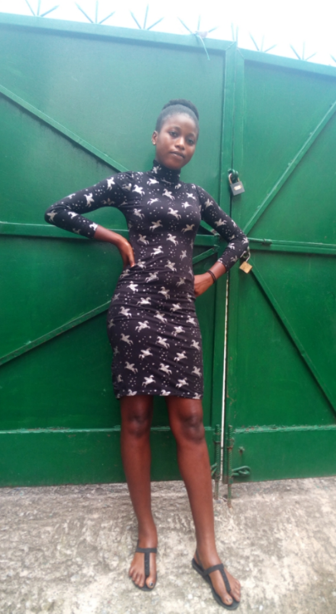

achievement
go to my form

My Achievement
MY PAGE LINK
MY NAME IS AKINNAWO FAITH.These are what i have achieved
so far in my life.I have been able to achieve some numerous
things,being alive alone and doing what i love and also
studying the course i want is a great achievement.Here are
some of the things i have achieved so far;
-Won a gold medal as the best runner in school.During my
pre-university,i was given the opportunity to perform in
the running competition in which i came first and i was
given a medal to award my good deed and professionalism.
-During my pre-university days,i was given the opportunity
to actually lead my colleagues as the assembly prefect and
this was given to me due to my countless punctuality in all
needings of my attendance in school.
-As a Direct entry student,During my Interim joint Matriculation
board(Ijmb) program,i have been able to make a good satisfactory
points which gave me the priviledge and opportunity to be admitted
into this Great university.
-I have also been opportuned to learn catering and collected certificate
and with this great opportunity,i have been able to engage myself in the
catering business whereas i bake for birthday parties and i have been able
to generate revenue from it.